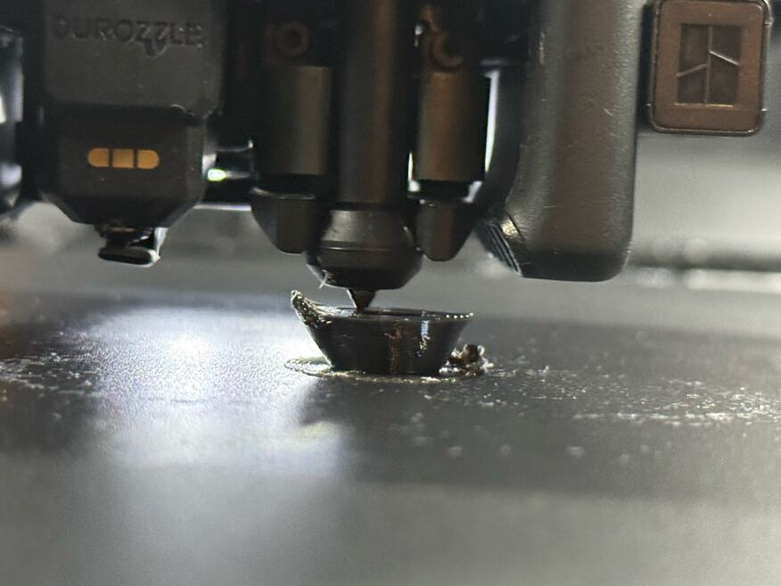

Cooling
Less fan made it curl more.
Where a wall leans out, the newest ring of plastic has air under its outer edge. In soft TPU that edge curled upward while the fan was blowing at full. Derek halved the fan to see what would happen. Both lips curled at once.
Seen in Bambu TPU 85A, black · Mark 1 · glued Engineering Plate · right 0.6 mm nozzleNot tried in: Siraya 85A

What Derek watched
The lip. About layer 28, a millimetre of the outside edge curled upward on the left.
The nozzle. The next layers pressed the edge down. It sprang back.
Loose plastic. Around layer 31 a glob was pulled off the lip and carried elsewhere. A lump lies on the bed here.
“Haha, just to test, I dropped part fan from 100 to 50 just now and like instantly we got more curl on that left edge and then the right edge curled too.”
The left lip had curled with the fan at full. Halving it made that worse and brought the right lip up too.
The outer edge of the newest courses lifts.
The next pass presses it flat. It springs back behind the nozzle.
The nozzle catches the raised edge and carries a piece away.
{{tpu-elbow:/fan_min_speed/0}}%
part fan in the TPU 85A recipes, on every layer after the first
{{tpu-petgf:/fan_max_speed/0}}%
part fan on PET-GF’s ordinary walls. It comes on, at {{tpu-petgf:/overhang_fan_speed/0}}%, only for a road laid over air.
Ten degrees cooler changed nothing
Two prints later the layers ran at 215 °C instead of 225 °C. Derek saw faint curl at layer 21, and at layer 27: “it is about the same as 2 prints ago. I was wrong about it being sudden at 28, I just happened to notice it there.”
What we do
The part fan stays at full on soft TPU that leans. That did not stop the curl. What ended it is on the last page of this part, and the fan was at full there too.
Still openWhy less fan curled it more is not known. It was one change to one running print, and the layer was not noted. It has not been tried on the Siraya spool.
In the record
What was seen, and the photograph · Ten degrees cooler · PET-GF’s cooling